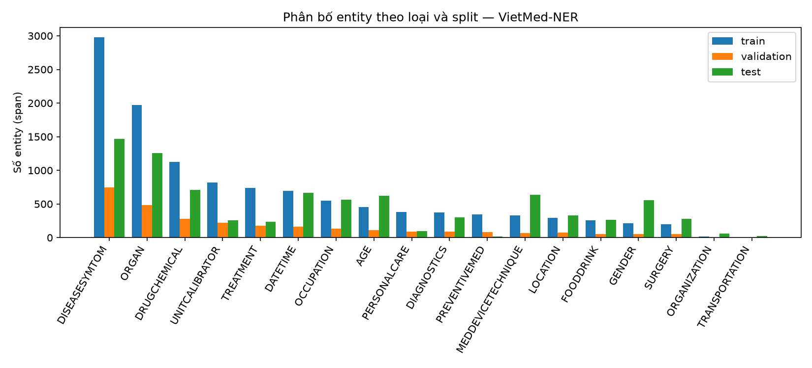
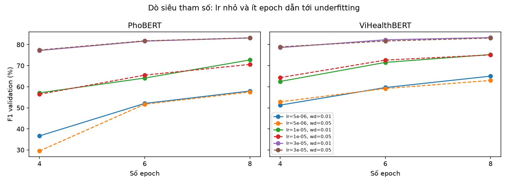
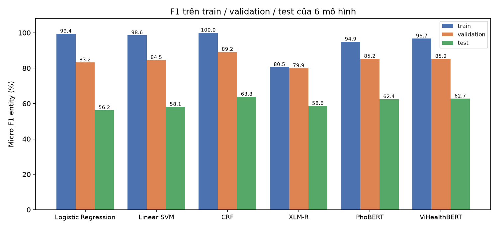
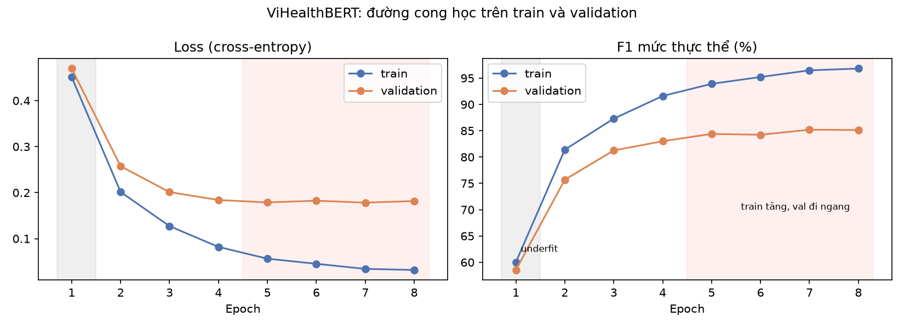
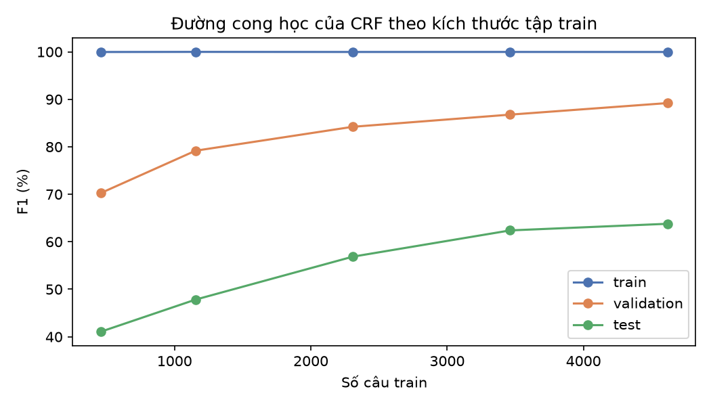
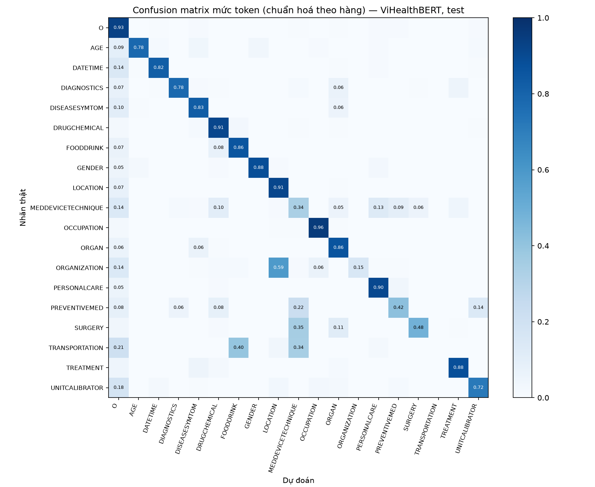
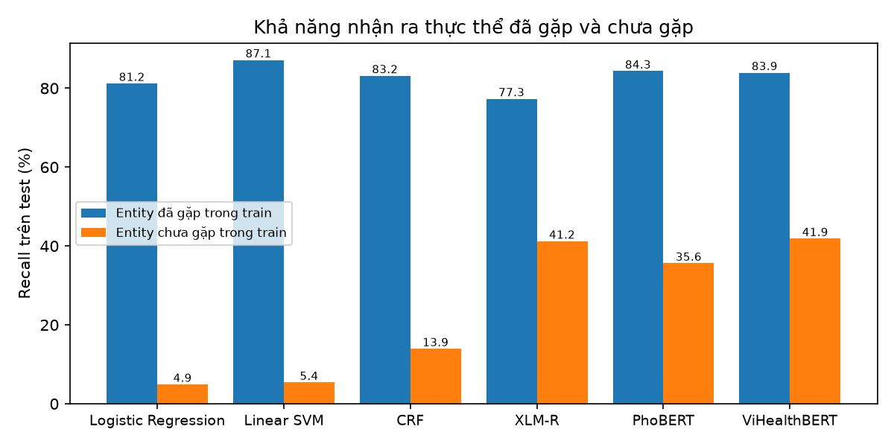
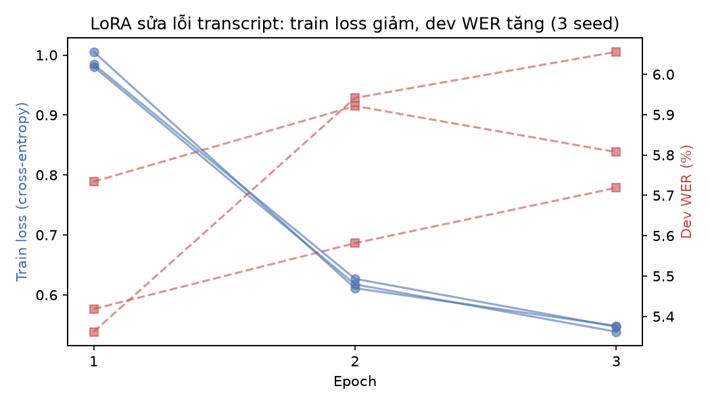

ĐẠI HỌC QUỐC GIA TP. HỒ CHÍ MINH
Nhận dạng thực thể y tế
trong hội thoại tiếng Việt
So sánh 6 mô hình học máy trên VietMed-NER
Bài toán: gán nhãn chuỗi theo sơ đồ BIO
Đầu vào → đầu ra
- Đầu vào: câu tiếng Việt đã tách theo âm tiết
- Đầu ra: một nhãn cho mỗi âm tiết
- B-X mở đầu thực thể loại X, I-X nối tiếp, O ngoài thực thể
- 18 loại thực thể → 37 nhãn (18 × B/I + O)
Ví dụ từ tập test
Bệnh/triệu chứng, cơ quan, thuốc, thời gian, tuổi, nghề nghiệp, …
Bộ dữ liệu VietMed-NER
| Tập | Số câu | Số token | Số thực thể | Câu không có thực thể | Độ dài TB / trung vị |
|---|---|---|---|---|---|
| train | 4.616 | 111.267 | 11.747 | 440 | 24,1 / 26 |
| validation | 1.154 | 27.657 | 2.889 | 105 | 24,0 / 26 |
| test | 3.497 | 77.675 | 8.338 | 353 | 22,2 / 20 |
Nguồn và gán nhãn
- Transcript của VietMed (âm thanh y tế thật)
- 2 người gán nhãn độc lập, 1 người có nền y khoa
- Xung đột giải quyết qua thảo luận; 2 người khác rà soát toàn bộ
- Loại dữ liệu: văn bản (không phải bảng/ảnh/video)
EDA: mất cân bằng lớp rất nặng

ORGANIZATION và TRANSPORTATION có dưới 20 mẫu train.
EDA: test lệch miền so với train và validation
Nguồn gốc từng câu (đã đối chiếu)
- 100% câu train + validation khớp VietMed train + dev + cv (5.770 câu), chia ngẫu nhiên từ chung một nguồn
- Test: 3.437 câu khớp VietMed test, 60 câu không khớp chính xác
| VietMed | Nhóm bệnh ICD-10 chính | Ngữ cảnh ghi âm |
|---|---|---|
| train | M, E, C–D, G, I | Tư vấn, điện thoại |
| dev | Z, I, F, R, D, L | Điện thoại, sách, tư vấn |
| test | K, M, O, P, N, V–Y, H | Podcast, talkshow, bài giảng, tin tức |
| So với từ vựng train (2.220 âm tiết) | Validation | Test |
|---|---|---|
| Token chưa gặp | 0,42% | 1,83% |
| Loại âm tiết chưa gặp | 6,4% | 22,7% |
| Thực thể chưa gặp | 6,7% | 30,7% |
Hệ quả
Validation cùng miền với train, test là các bản ghi khác hẳn. Gần 1/3 thực thể test chưa từng xuất hiện ở train ⇒ mô hình dựa vào ghi nhớ sẽ tụt mạnh trên test.
Tiền xử lý và mã hoá dữ liệu
| Kiểm tra chất lượng | Train | Val | Test |
|---|---|---|---|
| Câu rỗng / token rỗng | 0 / 0 | 0 / 0 | 0 / 0 |
| Số âm tiết ≠ số nhãn | 0 | 0 | 0 |
| Token chưa chuẩn hoá Unicode NFC | 0 | 0 | 0 |
| Token có chữ hoa / chỉ dấu câu | 0 / 0 | 0 / 0 | 0 / 0 |
| Chuỗi BIO lỗi (I- sau O) | 16 | 0 | 7 |
Không có giá trị thiếu; dữ liệu đã viết thường, chuẩn NFC. 23 chuỗi BIO lỗi (< 0,02% token) được giữ nguyên để không đổi tập đánh giá.
Mã hoá
- Nhãn: 37 nhãn BIO → số nguyên (label2id) chỉ từ train; nhãn
"0"đổi thànhO - Transformer: âm tiết → subword; nhãn chỉ gán cho subword đầu, subword còn lại nhận
-100(bỏ qua khi tính loss); tối đa 256 subword - Mô hình cổ điển: đặc trưng thủ công (âm tiết, là số, tiền/hậu tố 2 ký tự, cửa sổ ±2, bigram) → DictVectorizer 77.424 chiều (one-hot, thưa)
- Chia dữ liệu: giữ 3 tập chính thức; chọn siêu tham số theo validation, test chỉ dùng 1 lần
Sáu mô hình và siêu tham số được chọn
| Mô hình | Nhóm | Ý tưởng | Cấu hình được chọn (theo validation) |
|---|---|---|---|
| Logistic Regression | Cổ điển, từng token | Phân loại độc lập từng âm tiết | L2, C = 10 |
| Linear SVM | Cổ điển, từng token | Siêu phẳng lề cực đại | C = 1, one-vs-rest |
| CRF | Cổ điển, mô hình chuỗi | Học thêm xác suất chuyển nhãn | c1 = 0,1, c2 = 0,01 |
| XLM-RoBERTa | Transformer đa ngôn ngữ | Checkpoint của tác giả bộ dữ liệu | Có sẵn, không train lại |
| PhoBERT-base-v2 | Transformer tiếng Việt | Pretrain văn bản tiếng Việt chung | lr 3e-5, 8 epoch, wd 0,05, seed 123 |
| ViHealthBERT | Transformer tiếng Việt y tế | Pretrain thêm văn bản y tế | lr 3e-5, 8 epoch, wd 0,01, seed 2024 |

Dò 18 cấu hình
- lr × epoch × weight decay
- F1 val tăng theo lr và epoch
- lr 5e-6, 4 epoch: PhoBERT chỉ 36,65% ⇒ underfitting
- Tốt nhất nằm ở biên lưới
Kết quả tổng thể (seqeval strict, micro F1 %)
| Mô hình | Train F1 | Val F1 | Test P | Test R | Test F1 | CI95 test F1 |
|---|---|---|---|---|---|---|
| Logistic Regression | 99,40 | 83,21 | 54,73 | 57,81 | 56,23 | 55,1–57,3 |
| Linear SVM | 98,57 | 84,53 | 54,59 | 62,09 | 58,10 | 57,0–59,2 |
| CRF | 99,96 | 89,15 | 65,78 | 61,93 | 63,80 | 62,6–64,9 |
| XLM-R | 80,55 | 79,93 | 52,58 | 66,24 | 58,62 | 57,5–59,7 |
| PhoBERT | 94,89 | 85,24 | 56,73 | 69,39 | 62,42 | 61,3–63,5 |
| ViHealthBERT | 96,71 | 85,18 | 56,18 | 71,04 | 62,74 | 61,7–63,8 |

- CRF cao nhất trên test: 63,80%
- ViHealthBERT, PhoBERT đứng ngay sau; recall cao nhưng precision thấp ⇒ đoán dư
- CRF là mô hình duy nhất có P > R
- Mọi mô hình tụt 21–27 điểm từ val sang test
Chênh lệch có ý nghĩa thống kê không?
Paired bootstrap trên 3.497 câu test, 2.000 lần lấy mẫu lại, cùng mẫu cho mọi mô hình.
| So sánh (A − B) | Chênh lệch F1 (điểm) | CI95 | Kết luận |
|---|---|---|---|
| CRF − ViHealthBERT | +1,05 | [+0,08; +2,05] | có ý nghĩa |
| CRF − PhoBERT | +1,37 | [+0,43; +2,31] | có ý nghĩa |
| ViHealthBERT − PhoBERT | +0,32 | [−0,41; +1,04] | không có ý nghĩa |
| PhoBERT − XLM-R | +3,80 | [+2,89; +4,82] | có ý nghĩa |
| CRF − Linear SVM | +5,70 | [+4,90; +6,50] | có ý nghĩa |
| Linear SVM − Logistic Regression | +1,87 | [+1,35; +2,42] | có ý nghĩa |
Đọc kết quả
- CRF hơn ViHealthBERT là lợi thế nhỏ: CI95 nằm trên 0 nhưng cận dưới rất sát 0
- ViHealthBERT và PhoBERT ngang nhau (CI95 chứa 0)
- Thêm quan hệ giữa các nhãn liền kề (CRF so với Linear SVM) mang lại +5,70 điểm
Train và validation: overfitting hay underfitting?


ViHealthBERT theo epoch
- Epoch 1: train F1 60,0%, val F1 58,5% ⇒ underfitting
- Từ epoch 5: train loss 0,056 → 0,032, val loss đi ngang, val F1 dừng ở 84,4–85,2%
- Epoch 8: train 96,81% vs val 85,13% (cách 11,7 điểm) ⇒ overfitting vừa phải
CRF và tổng hợp
- CRF: train F1 ≈ 100% ở mọi kích thước ⇒ ghi nhớ (overfit mạnh); test F1 chưa bão hoà (41,1% → 63,8%)
- Train → val: 9,6–16,2 điểm; val → test: 21–27 điểm
- ⇒ Lệch miền mới là nguyên nhân chính làm giảm điểm test
Confusion matrix: mô hình hay nhầm lớp nào?

Cặp hay nhầm (ViHealthBERT, test)
- "tiêu xương" → "xương": DISEASESYMTOM → ORGAN (24 lần)
- "implant": SURGERY → MEDDEVICETECHNIQUE (40 lần)
- "chính phủ": ORGANIZATION → LOCATION (9 lần)
- MEDDEVICETECHNIQUE: chỉ ~1/3 token đoán đúng
| Mức thực thể | Khớp | Lệch biên | Sai loại | Bỏ sót | Thừa |
|---|---|---|---|---|---|
| LogReg | 4.820 | 1.871 | 200 | 1.447 | 1.420 |
| Linear SVM | 5.177 | 1.865 | 189 | 1.107 | 1.640 |
| CRF | 5.164 | 1.429 | 171 | 1.574 | 1.052 |
| XLM-R | 5.523 | 1.797 | 463 | 555 | 2.177 |
| PhoBERT | 5.786 | 1.644 | 424 | 484 | 1.796 |
| ViHealthBERT | 5.923 | 1.622 | 441 | 352 | 2.089 |
Lỗi chủ yếu là lệch ranh giới và đoán thừa, không phải sai loại. Test có 8.338 thực thể.
Phân tích lỗi: thực thể đã gặp và chưa gặp

Ví dụ (thực thể chưa gặp):
"rong huyết như vậy mình sẽ phân biệt với rong kinh và rong huyết"
ViHealthBERT: đúng cả 3 thực thể
CRF: rong huyết → ORGAN (×2)
Test có 5.782 thực thể đã gặp và 2.556 chưa gặp. Mô hình cổ điển ghi nhớ từ vựng; Transformer dùng biểu diễn học từ pretraining nên suy ra được thực thể mới (ViHealthBERT ≈ 3 lần CRF).
Vì sao mô hình này tốt hơn mô hình kia?
Từng token vs mô hình chuỗi
| Chuyển nhãn BIO không hợp lệ (test) | Số lần |
|---|---|
| Logistic Regression | 1.127 |
| Linear SVM | 1.175 |
| CRF | 9 |
| Transformer | 595–778 |
- Cùng đặc trưng, CRF hơn LogReg 7,6 và SVM 5,7 điểm
- Lệch biên: CRF 1.429 vs LogReg 1.871
CRF: ghi nhớ thuật ngữ
- Đặc trưng từ vựng nhớ chính xác thuật ngữ y khoa
- 69% thực thể test đã gặp ở train ⇒ thắng F1 tổng
- Precision cao nhất (65,78%), ít đoán thừa
- Nhược điểm: train F1 ≈ 100%, chỉ nhận ra 13,9% thực thể mới
ViHealthBERT: tổng quát hoá
- Pretrain thêm trên văn bản y tế
- Nhận ra 41,9% thực thể mới, gấp ≈ 3 lần CRF
- Ngang PhoBERT về F1 tổng, tốt hơn ở lớp y khoa
- XLM-R kém nhất nhóm Transformer dù nhiều tham số nhất (277M)
Chọn theo dữ liệu: thuật ngữ lặp lại như train → CRF (rẻ, chính xác nhất theo strict). Hội thoại chủ đề bệnh mới như test → ViHealthBERT.
Đối chiếu bài báo gốc: strict và SLUE
| Mô hình | F1 strict (%) | F1 kiểu SLUE (%) | Bài báo công bố |
|---|---|---|---|
| Logistic Regression | 56,23 | 66,71 | — |
| Linear SVM | 58,10 | 67,59 | — |
| CRF | 63,80 | 68,22 | — |
| XLM-R | 58,62 | 68,53 | 69 (P 64 / R 73) |
| PhoBERT | 62,42 | 70,58 | 74 |
| ViHealthBERT | 62,74 | 71,82 | — |
Khác thước đo
- Strict: khớp chính xác cả ranh giới lẫn loại
- SLUE: so khớp tập (loại, âm tiết), không xét ranh giới ⇒ dễ hơn
- Cùng checkpoint XLM-R: SLUE 68,53% ≈ 69% bài báo
- Thứ hạng đảo: SLUE ⇒ ViHealthBERT đầu, CRF đứng sau các Transformer
Nhóm chọn strict làm thước đo chính vì ứng dụng cần trích xuất đúng cả cụm thực thể để ghi vào hồ sơ.
Kết luận và hướng phát triển
Kết luận
- Val (cùng miền) ≈ 83–89% F1; test (khác miền) chỉ 56–64%
- CRF tốt nhất theo strict (63,80%), lợi thế nhỏ nhưng có ý nghĩa
- Mô hình chuỗi vượt rõ mô hình từng token
- ViHealthBERT ≈ PhoBERT, tổng quát hoá tốt nhất
- Nút thắt ở dữ liệu: lệch miền, mất cân bằng, ranh giới nhãn mơ hồ
Hướng phát triển
- BERT-CRF: ngữ nghĩa + ràng buộc chuyển nhãn
- Trọng số lớp / oversampling cho lớp hiếm
- Mở rộng lưới (lr 5e-5, 10 epoch)
- Tách từ VnCoreNLP cho PhoBERT
- Dữ liệu cùng miền test, từ điển thuật ngữ y khoa
- Chỉ gợi ý sửa transcript để người dùng duyệt

Mở rộng ASR: LoRA sửa lỗi transcript — train loss ↓ (≈ 0,98 → 0,54) nhưng dev WER ↑ (seed 42: 5,36% → 6,06%) ⇒ overfitting, early stopping chọn epoch 1.